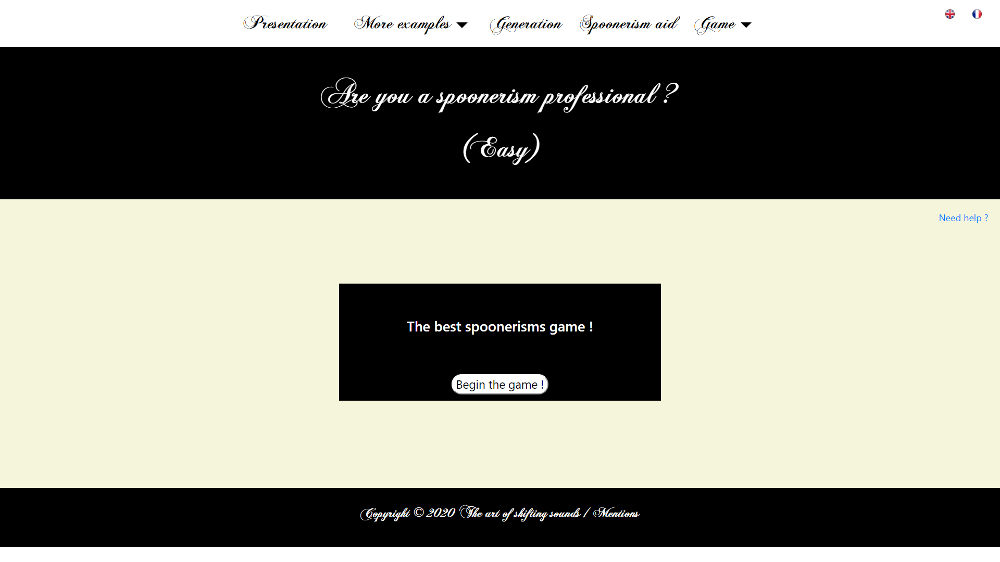
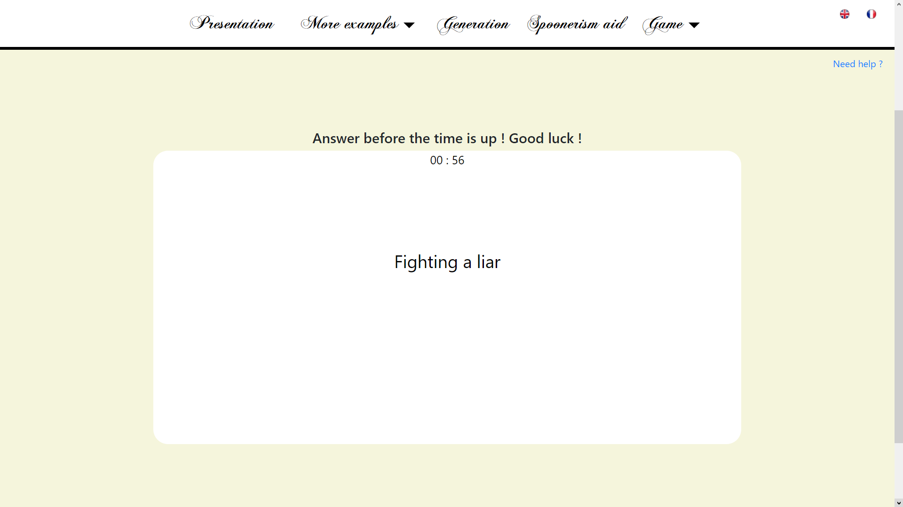
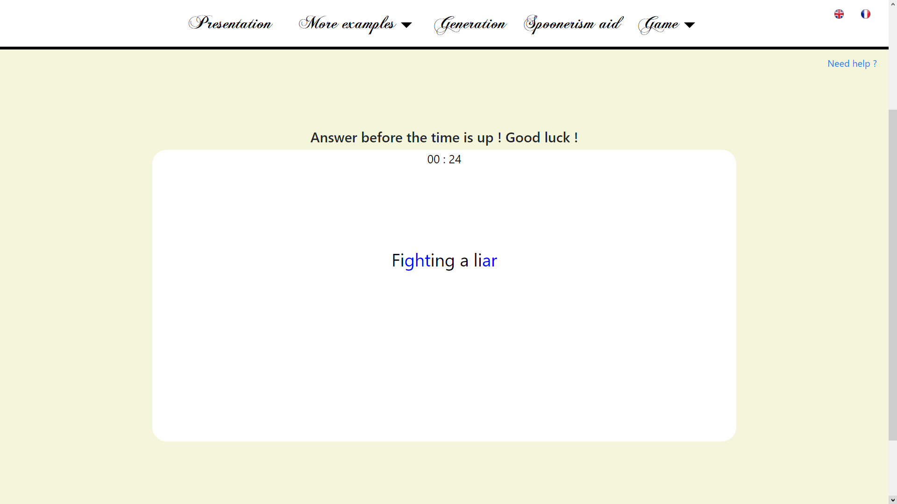
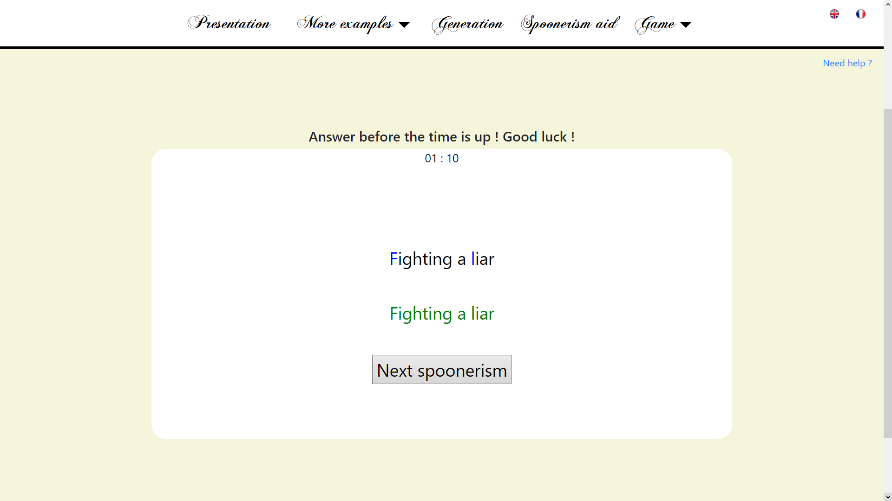

Welcome to the page of the spoonerism game. To start the game, click on "Begin the game".
Once you are in this page, click on "Start" to launch the game. Thereby, the timer will begin to start and the first spoonerism will appear.

Click on a letter or a syllable to choose the first element that you think being the good one to create a spoonerism. The element clicked will be in blue.
Click now on the second element which will appear in blue too.
This picture show you the case you didnt find the right pair. You will have to click another time on one of the both element you clicked before to deselect one of them. The elements will be back in black and you will be able to select another time a pair of elements.
However if you have found the right pair, the answer will appear in green and you will be able to click on "Next spoonerism" to show another spoonerism.
Good luck!
Back to the game !